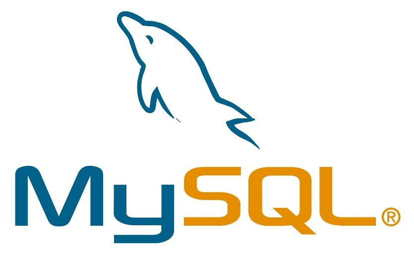
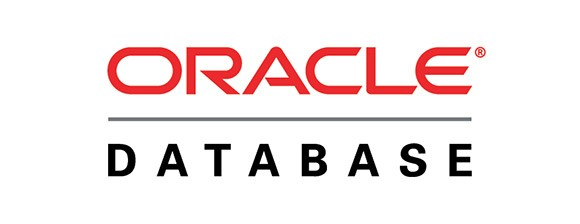

Principales Motores de Bases de Datos
MySQL
MySQL es un sistema de gestión de bases de datos relacional desarrollado bajo licencia dual: Licencia pública general/Licencia comercial por Oracle Corporation y está considerada como la base datos de código abierto más popular del mundo,y una de las más populares en general junto a Oracle y Microsoft SQL Server, sobre todo para entornos de desarrollo web.
MySQL fue inicialmente desarrollado por MySQL AB (empresa fundada por David Axmark, Allan Larsson y Michael Widenius). MySQL AB fue adquirida por Sun Microsystems en 2008, y ésta a su vez fue comprada por Oracle Corporation en 2010, la cual ya era dueña desde 2005 de Innobase Oy, empresa finlandesa desarrolladora del motor InnoDB para MySQL.
Está desarrollado en su mayor parte en ANSI C y C++.Tradicionalmente se considera uno de los cuatro componentes de la pila de desarrollo LAMP y WAMP.
SQL Server
Microsoft SQL Server es un sistema de gestión de base de datos relacional, desarrollado por la empresa Microsoft.
El lenguaje de desarrollo utilizado (por línea de comandos o mediante la interfaz gráfica de Management Studio) es Transact-SQL (TSQL), una implementación del estándar ANSI del lenguaje SQL, utilizado para manipular y recuperar datos (DML), crear tablas y definir relaciones entre ellas (DDL).
Oracle Database
Oracle Database es un sistema de gestión de base de datos de tipo objeto-relacional (ORDBMS, por el acrónimo en inglés de Object-Relational Data Base Management System), desarrollado por Oracle Corporation.
La última versión de Oracle es la versión 12c, la primera base de datos diseñada para Cloud Computing, que fue lanzada en 2013, donde con la presentación de la llegada de esta última versión de Oracle Database 12c, Oracle facilita los esfuerzos de las empresas para estandarizar, consolidar y automatizar los servicios de las bases de datos en la nube.